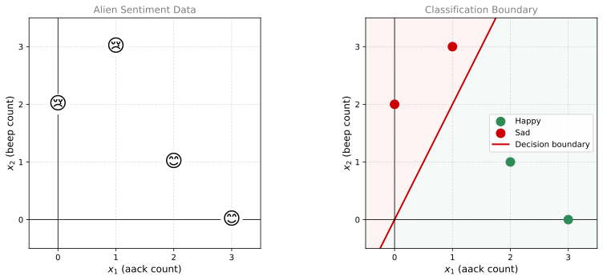
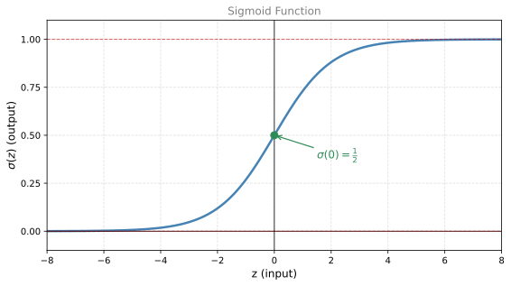
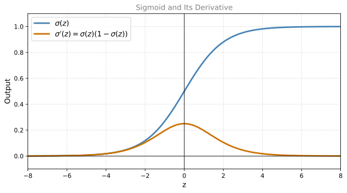

Classification with a Perceptron
calculus
We have already seen how a perceptron solves regression problems. The output was a continuous number (a price, a sales figure, etc.). But a perceptron…
We have already seen how a perceptron solves regression problems. The output was a continuous number (a price, a sales figure, etc.). But a perceptron can also solve classification problems, specifically binary classification. The only change we need to make is to add an activation function at the output. In this page, we will see exactly how that works.
From Regression to Classification
In regression, the perceptron computed a linear combination and output it directly. Recall the general formula from the Optimization in Neural Networks page.
\[\hat{y} = w_1 x_1 + w_2 x_2 + \cdots + w_n x_n + b\]
Or in compact notation, \(\hat{y} = \mathbf{w} \cdot \mathbf{x} + b\) (if you need a refresher on the dot product, see the linear algebra notes). That worked because we wanted a continuous prediction (a price, a sales figure). But for classification, we want the output to represent a probability, a number between 0 and 1 that tells us how confident the model is about the class.
The solution is to pass the linear combination through an activation function that squishes the entire number line into the interval \([0, 1]\).
A Motivating Example: Alien Sentiment Analysis
Imagine you have encountered an alien civilization. They only have two words in their language: aack and beep. You listen to four sentences and take note of the alien’s mood when saying each one.
| Sentence | aack count (\(x_1\)) | beep count (\(x_2\)) | Mood |
|---|---|---|---|
| Aack aack aack! | 3 | 0 | Happy (1) |
| Beep beep! | 0 | 2 | Sad (0) |
| Aack beep beep beep! | 1 | 3 | Sad (0) |
| Aack beep aack! | 2 | 1 | Happy (1) |
The goal is to build a model that can predict the mood (happy or sad) for new sentences based on the word counts.
Plotting the Data
If we plot these points with \(x_1\) (aack count) on the horizontal axis and \(x_2\) (beep count) on the vertical axis, a pattern emerges. The happy points tend to cluster in the bottom-right (more aack, less beep) and the sad points cluster in the top-left (more beep, less aack). A good classifier should find a line that separates these two regions.
The Classification Perceptron
The architecture looks almost identical to the regression perceptron. We have inputs \(x_1\) and \(x_2\), weights \(w_1\) and \(w_2\), and a bias \(b\). The difference is what happens inside the node.
Step 1: Linear Combination
The perceptron first computes a continuous number \(z\) (the weighted sum of the inputs). This number can be anything on the real number line. Then it passes \(z\) through an activation function (the sigmoid function), which squishes the output into the range 0 to 1.
Just like before, we compute a weighted sum (a dot product between the weight vector and the input vector, plus a bias).
\[z = w_1 x_1 + w_2 x_2 + b\]
The weights encode the importance of each feature. If the word “aack” is strongly correlated with happiness, then \(w_1\) will be a large positive number. If “beep” is correlated with sadness (inversely correlated with happiness), then \(w_2\) will be a negative number.
The output \(z\) is a continuous value. It can be any real number: \(-1000\), \(+7000\), \(0.5\), anything.
Step 2: The Sigmoid Activation Function
We cannot use \(z\) directly as our prediction because we need a number between 0 and 1. This is where the sigmoid function comes in. It takes any real number and maps it to the interval \((0, 1)\).
\[\sigma(z) = \frac{1}{1 + e^{-z}}\]
The final prediction is:
\[\hat{y} = \sigma(z) = \frac{1}{1 + e^{-z}}\]
Interpreting the Output
The sigmoid output has a natural interpretation as a probability.
- \(\hat{y} = 0.9\) means the model is quite confident the sentence is happy.
- \(\hat{y} = 0.5\) means the model is uncertain (equally likely happy or sad).
- \(\hat{y} = 0.01\) means the model is quite confident the sentence is sad.
What the Weights Represent Geometrically
The linear combination \(z = w_1 x_1 + w_2 x_2 + b = 0\) defines a decision boundary, a line in the feature space. On one side of this line, \(z > 0\) and the sigmoid outputs values greater than 0.5 (predicting happy). On the other side, \(z < 0\) and the sigmoid outputs values less than 0.5 (predicting sad).
The weights and bias together determine the position and orientation of this dividing line. Training the perceptron means finding the line that best separates the happy and sad regions.
Sigmoid Function In Detail
Now let us look at the sigmoid more closely and graph it. Later, we will also compute its derivative, which turns out to be remarkably simple and is one of the reasons the sigmoid is so popular in machine learning.
The sigmoid function takes any real number and maps it to the interval \((0, 1)\).
\[\sigma(z) = \frac{1}{1 + e^{-z}}\]

The horizontal axis is the input \(z\) (which can be any real number) and the vertical axis is the output \(\sigma(z)\) (which is always between 0 and 1).
A few key observations about the graph.
- The sigmoid has horizontal asymptotes at 0 and 1. It never actually reaches these values, but it gets arbitrarily close.
- \(\sigma(0) = \frac{1}{2}\). You can verify this by plugging in: \(\frac{1}{1 + e^0} = \frac{1}{1 + 1} = \frac{1}{2}\).
- For large positive inputs (like \(z = 1000\)), \(\sigma(z)\) is very close to 1.
- For large negative inputs (like \(z = -1000\)), \(\sigma(z)\) is very close to 0.
Why the Derivative Matters
In machine learning, we train models using gradient descent, which requires computing derivatives. If the activation function has a messy derivative, the math and the code become painful. The sigmoid has an exceptionally clean derivative, which makes it a natural choice.
Computing the Derivative
We want to find \(\frac{d}{dz}\sigma(z)\). Let us work through it step by step using the chain rule.
Rewriting for the Chain Rule
First, rewrite the sigmoid in a form that is easier to differentiate.
\[\sigma(z) = (1 + e^{-z})^{-1}\]
Applying the Chain Rule
The chain rule says: take the derivative of the outer function, then multiply by the derivative of the inner function.
\[\frac{d}{dz}\sigma(z) = -1 \cdot (1 + e^{-z})^{-2} \cdot \frac{d}{dz}(1 + e^{-z})\]
Now compute the derivative of the inside. The derivative of 1 is 0. The derivative of \(e^{-z}\) is \(e^{-z} \cdot (-1)\) (chain rule again). So:
\[\frac{d}{dz}(1 + e^{-z}) = 0 + e^{-z} \cdot (-1) = -e^{-z}\]
Simplifying
Plugging back in:
\[\frac{d}{dz}\sigma(z) = -1 \cdot (1 + e^{-z})^{-2} \cdot (-e^{-z})\]
The two negatives cancel:
\[\frac{d}{dz}\sigma(z) = \frac{e^{-z}}{(1 + e^{-z})^2}\]
The Elegant Trick
This is where it gets beautiful. We add and subtract 1 in the numerator:
\[\frac{e^{-z}}{(1 + e^{-z})^2} = \frac{(1 + e^{-z}) - 1}{(1 + e^{-z})^2}\]
Split into two fractions:
\[= \frac{1 + e^{-z}}{(1 + e^{-z})^2} - \frac{1}{(1 + e^{-z})^2}\]
The first fraction simplifies (cancel one factor from top and bottom):
\[= \frac{1}{1 + e^{-z}} - \frac{1}{(1 + e^{-z})^2}\]
Factor out \(\frac{1}{1 + e^{-z}}\):
\[= \frac{1}{1 + e^{-z}} \left(1 - \frac{1}{1 + e^{-z}}\right)\]
Final Result
Recognize that \(\frac{1}{1 + e^{-z}}\) is just \(\sigma(z)\). So:
\[\boxed{\frac{d}{dz}\sigma(z) = \sigma(z) \cdot (1 - \sigma(z))}\]
The derivative of the sigmoid is the sigmoid times one minus the sigmoid. That is it.

Notice that the derivative (orange curve) peaks at \(z = 0\) where \(\sigma(0) = \frac{1}{2}\), giving a maximum derivative value of \(\frac{1}{2} \cdot \frac{1}{2} = \frac{1}{4}\). The derivative is largest where the sigmoid is steepest, which makes sense geometrically.
Training the Classification Perceptron
When we train a classification perceptron with gradient descent, we will need to differentiate the sigmoid as part of the chain rule. Instead of dealing with a complex fraction every time, we can simply write:
\[\sigma'(z) = \sigma(z)(1 - \sigma(z))\]
This means that once we have computed the forward pass (which gives us \(\sigma(z)\)), the derivative is essentially free. We already have the value, so computing the gradient requires just one multiplication and one subtraction. This efficiency is one reason the sigmoid was the default activation function in neural networks for decades.
Now let us see how the full training process works.
A Worked Example
Take the sentence “Aack beep beep beep” as an example. It contains the word “aack” one time (\(x_1 = 1\)) and the word “beep” three times (\(x_2 = 3\)). Suppose we are in the middle of training and the current weights are \(w_1 = 4.5\), \(w_2 = 1.5\), and the bias \(b = 2\).
The perceptron multiplies the inputs by the weights, sums them up, and applies the sigmoid:
\[z = x_1 w_1 + x_2 w_2 + b = (1)(4.5) + (3)(1.5) + 2 = 11\]
\[\hat{y} = \sigma(11) \approx 0.99998\]
The model predicts this sentence is almost certainly happy (close to 1). But the actual label is \(y = 0\) (the sentence is sad). So the model is very wrong, and we need to update the weights to reduce this error.
Why Not Squared Error?
You might think we could use the same loss functions from regression: \(\hat{y} - y\), \((\hat{y} - y)^2\), or \(\frac{1}{2}(\hat{y} - y)^2\). Those work, but for classification, there is a better choice called the log loss (also known as binary cross-entropy). We already encountered it in the Log Loss section when we were finding the ideal coin to fit a dataset.
Log Loss
The log loss function is:
\[L(y, \hat{y}) = -y \ln(\hat{y}) - (1 - y)\ln(1 - \hat{y})\]
This is exactly the loss function from the coin-flipping problem. It has two key properties.
- If \(y = 0\), the loss simplifies to \(-\ln(1 - \hat{y})\). This is small when \(\hat{y}\) is close to 0 (correct prediction) and large when \(\hat{y}\) is close to 1 (wrong prediction).
- If \(y = 1\), the loss simplifies to \(-\ln(\hat{y})\). This is small when \(\hat{y}\) is close to 1 (correct) and large when \(\hat{y}\) is close to 0 (wrong).
In both cases, \(L(y, \hat{y})\) is large when \(\hat{y}\) is far from \(y\) and small when they are close. That is exactly what we want from a loss function.
Note
There are several reasons to prefer log loss over squared error for classification. One is that the math works out cleanly (as we will see shortly). Another is that log loss has a probabilistic interpretation. Since \(\hat{y}\) represents a probability, log loss measures how “surprised” we are by the true label given our prediction. This connects classification directly to information theory and maximum likelihood estimation.
Gradient Descent Update Rules
The goal is to find the weights \(w_1\), \(w_2\), and \(b\) that minimize the log loss. We use gradient descent, just like we did for regression. The update formulas are:
\[w_1 \leftarrow w_1 - \alpha \frac{\partial L}{\partial w_1}\]
\[w_2 \leftarrow w_2 - \alpha \frac{\partial L}{\partial w_2}\]
\[b \leftarrow b - \alpha \frac{\partial L}{\partial b}\]
We start with arbitrary (random) values for the weights and bias, compute the partial derivatives, update, and repeat.
Computing the Gradients
We need to find \(\frac{\partial L}{\partial w_1}\), \(\frac{\partial L}{\partial w_2}\), and \(\frac{\partial L}{\partial b}\). Let us focus on \(w_1\) first. The key question is: how does \(w_1\) affect the loss \(L\)?
The answer involves a chain of dependencies. The weight \(w_1\) affects \(\hat{y}\) (through the summation and sigmoid), and \(\hat{y}\) affects \(L\) (through the log loss formula). By the chain rule:
\[\frac{\partial L}{\partial w_1} = \frac{\partial L}{\partial \hat{y}} \cdot \frac{\partial \hat{y}}{\partial w_1}\]
The same pattern holds for \(w_2\) and \(b\):
\[\frac{\partial L}{\partial w_2} = \frac{\partial L}{\partial \hat{y}} \cdot \frac{\partial \hat{y}}{\partial w_2}\]
\[\frac{\partial L}{\partial b} = \frac{\partial L}{\partial \hat{y}} \cdot \frac{\partial \hat{y}}{\partial b}\]
Notice that \(\frac{\partial L}{\partial \hat{y}}\) appears in all three expressions. We only need to compute four derivatives total: the common one, plus the three partial derivatives of \(\hat{y}\) with respect to each parameter.
Derivative of Log Loss with Respect to \(\hat{y}\)
Recall \(L(y, \hat{y}) = -y\ln(\hat{y}) - (1 - y)\ln(1 - \hat{y})\).
Taking the derivative with respect to \(\hat{y}\):
\[\frac{\partial L}{\partial \hat{y}} = -\frac{y}{\hat{y}} + \frac{1 - y}{1 - \hat{y}}\]
Combining into a single fraction:
\[\frac{\partial L}{\partial \hat{y}} = \frac{-y(1 - \hat{y}) + (1-y)\hat{y}}{\hat{y}(1 - \hat{y})} = \frac{\hat{y} - y}{\hat{y}(1 - \hat{y})}\]
Derivatives of \(\hat{y}\) with Respect to Parameters
Recall that \(\hat{y} = \sigma(z)\) where \(z = w_1 x_1 + w_2 x_2 + b\). Using the sigmoid derivative \(\sigma'(z) = \sigma(z)(1 - \sigma(z)) = \hat{y}(1 - \hat{y})\) and the chain rule:
\[\frac{\partial \hat{y}}{\partial w_1} = \hat{y}(1 - \hat{y}) \cdot x_1\]
\[\frac{\partial \hat{y}}{\partial w_2} = \hat{y}(1 - \hat{y}) \cdot x_2\]
\[\frac{\partial \hat{y}}{\partial b} = \hat{y}(1 - \hat{y})\]
Putting It Together
Now multiply \(\frac{\partial L}{\partial \hat{y}}\) by each of the above:
\[\frac{\partial L}{\partial w_1} = \frac{\hat{y} - y}{\hat{y}(1 - \hat{y})} \cdot \hat{y}(1 - \hat{y}) \cdot x_1\]
The \(\hat{y}(1 - \hat{y})\) terms cancel beautifully:
\[\frac{\partial L}{\partial w_1} = (\hat{y} - y) \cdot x_1\]
\[\frac{\partial L}{\partial w_2} = (\hat{y} - y) \cdot x_2\]
\[\frac{\partial L}{\partial b} = (\hat{y} - y)\]
Note
Notice how clean these are. The sigmoid derivative and the log loss derivative were designed to cancel each other out. This is not a coincidence. It is one of the reasons log loss is the standard loss function for classification with sigmoid activation.
Interpreting the Gradients
These gradients have an intuitive interpretation. If \(y\) and \(\hat{y}\) are very close (good prediction), then \(\hat{y} - y\) is small, so the gradients are small. The model barely needs to update. But if \(\hat{y}\) is far from \(y\) (bad prediction), then \(\hat{y} - y\) is large, and the model makes a big correction. This is exactly what we want.
Final Gradient Descent Update Rules
Plugging the gradients into the gradient descent formulas:
\[w_1 \leftarrow w_1 - \alpha(\hat{y} - y) x_1\]
\[w_2 \leftarrow w_2 - \alpha(\hat{y} - y) x_2\]
\[b \leftarrow b - \alpha(\hat{y} - y)\]
You start with some initial \(w_1\), \(w_2\), and \(b\), then iterate using this procedure. After many iterations, you converge to values that give a good classification model for the dataset. That is gradient descent for a classification perceptron.